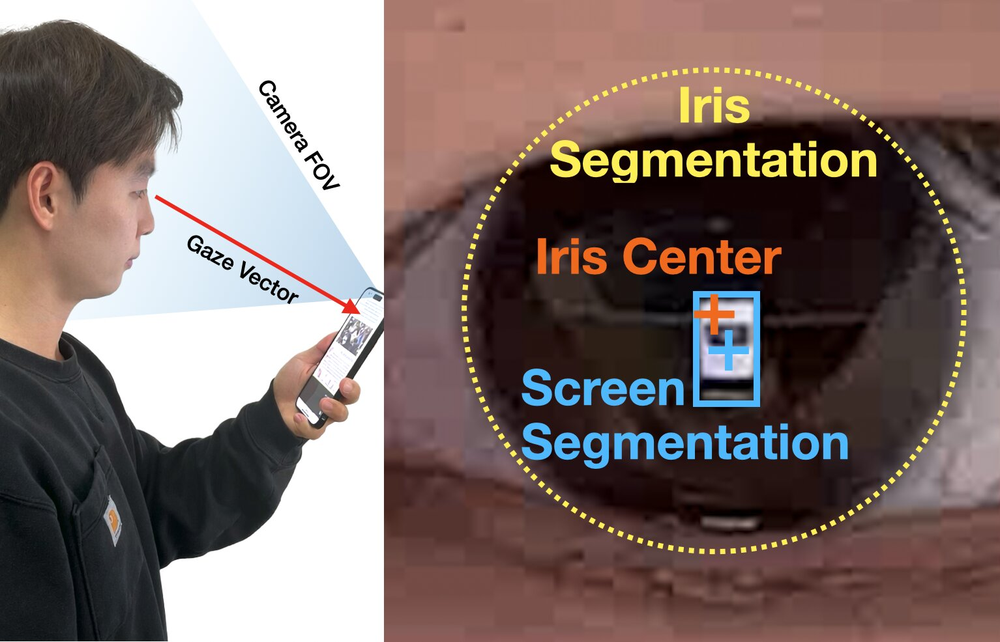
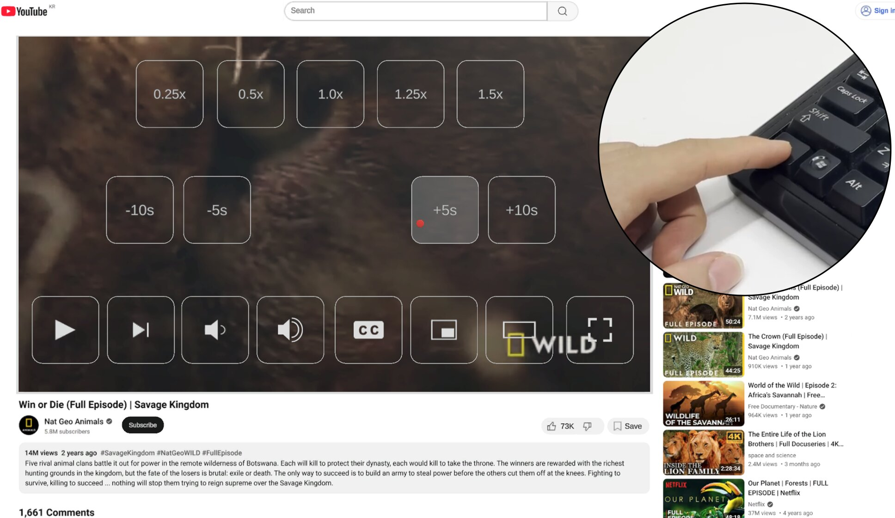
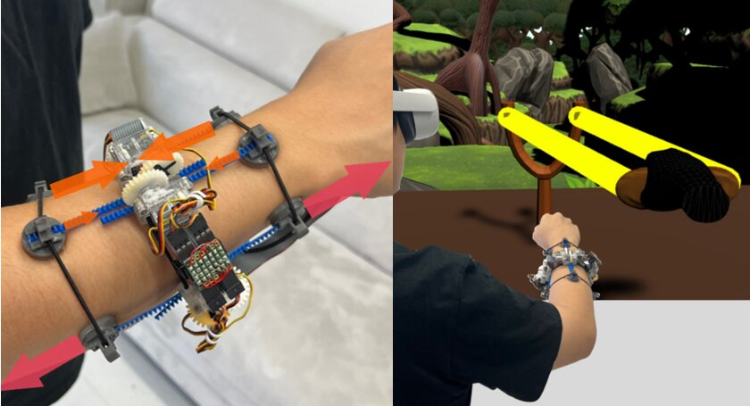
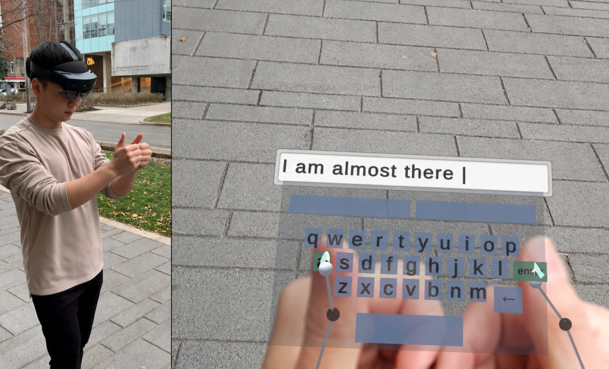
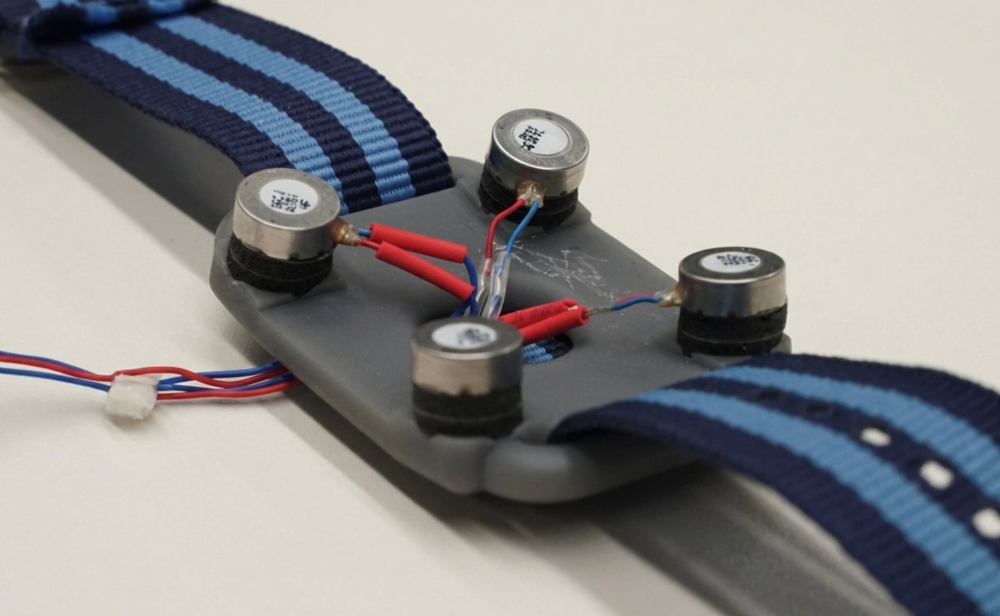

HiFiGaze: Improving Eye Tracking Accuracy Using Screen Content Knowledge (Honorable Mention Award, Top 5%) 🏆
CHI 2026: ACM Conference on Human Factors in Computing Systems
Taejun Kim, Vimal Mollyn, Riku Arakawa, Chris Harrison
Paper|
Video

Tension&Gaze: Gaze-Responsive UI Gated by Finger Tension
UIST 2025 Demo: ACM Symposium on User Interface Software and Technology
Taejun Kim, Ludwig Sidenmark, Parastoo Abtahi, Jisu Yim, YoungIn Kim, Geehyuk Lee
Paper|
DOI|
Video

QuadStretcher: A Forearm-Worn Skin Stretch Display for Bare-Hand Interaction in AR/VR
CHI 2024: ACM Conference on Human Factors in Computing Systems
Taejun Kim, Youngbo Shim, YoungIn Kim, Sunbum Kim, Jaeyeon Lee, Geehyuk Lee
Paper|
Video|
Code & Open Hardware

STAR: Smartphone-Analogous Typing in Augmented Reality
UIST 2023: ACM Symposium on User Interface Software and Technology
Taejun Kim, Amy Karlson, Aakar Gupta, Tovi Grossman, Jason Wu, Parastoo Abtahi, Christopher Collins, Michael Glueck, Hemant Bhaskar Surale
Paper|
Video

Heterogeneous Stroke: Using Unique Vibration Cues to Improve the Wrist-Worn Spatiotemporal Tactile Display
CHI 2021: ACM Conference on Human Factors in Computing Systems
Taejun Kim, Youngbo Aram Shim, Geehyuk Lee
Paper|
Video|
Code